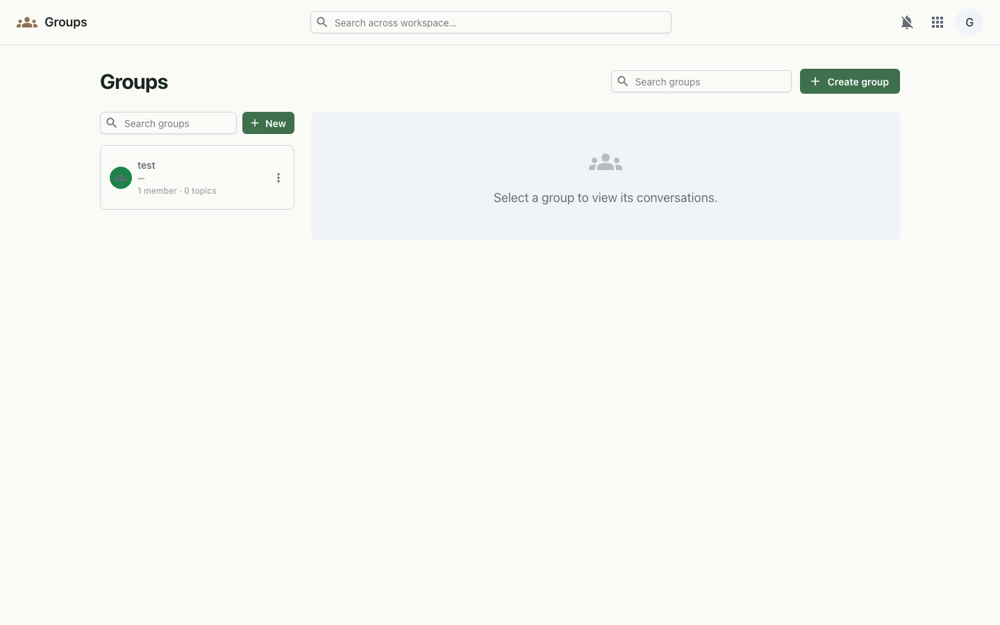

Mailing lists and team groups — a shared address and a place for the whole group to talk.
Groups bundle people behind a shared name and email address. Each group has a member roster and a stream of topic-based conversations, so a team, project or community has one place to reach everyone and keep discussions together.

Groups are stored per organisation and served from the workspace API. Member search resolves against the shared org directory, so any user in your org can be found and added — even before they've signed in. Each group owns its topics, and each topic its sequence of posts.